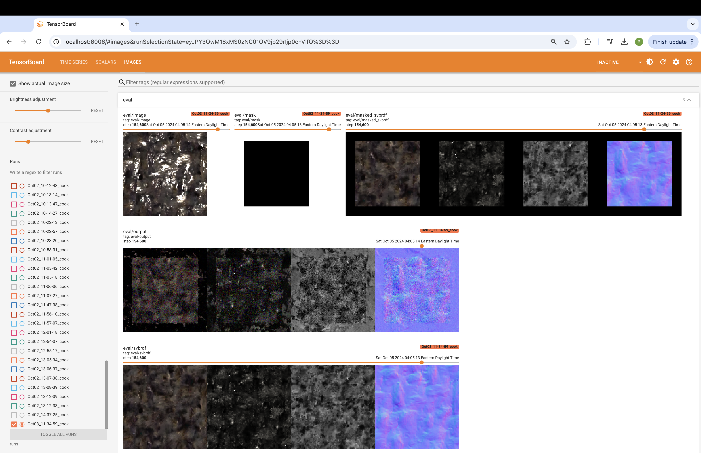
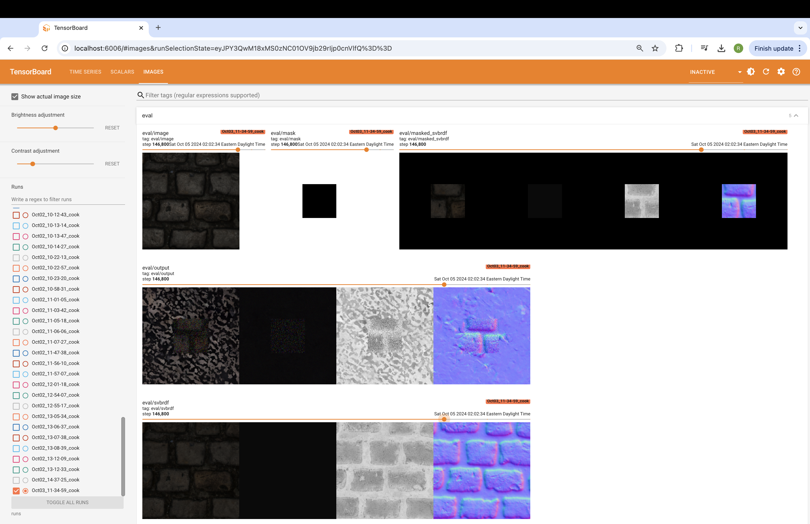
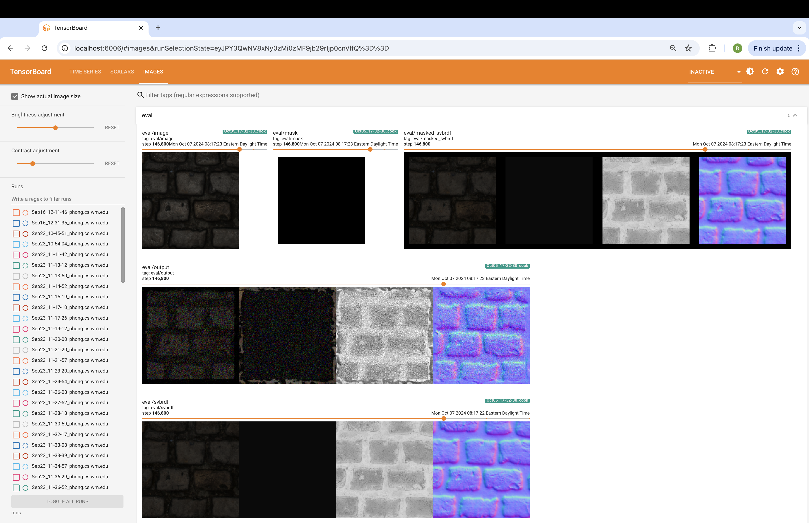
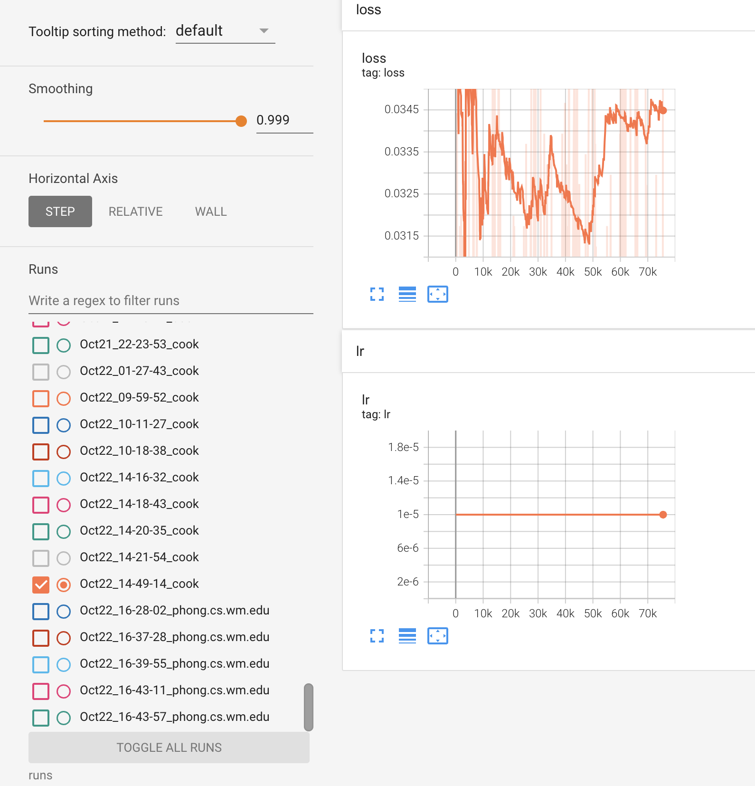
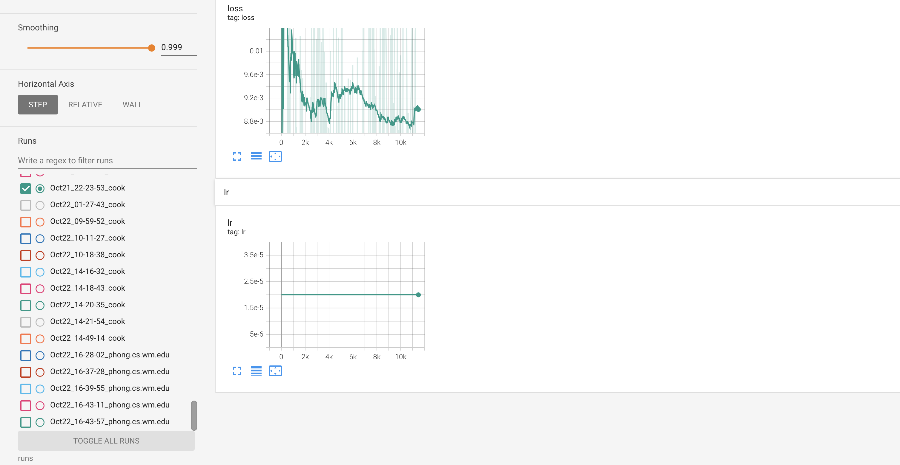
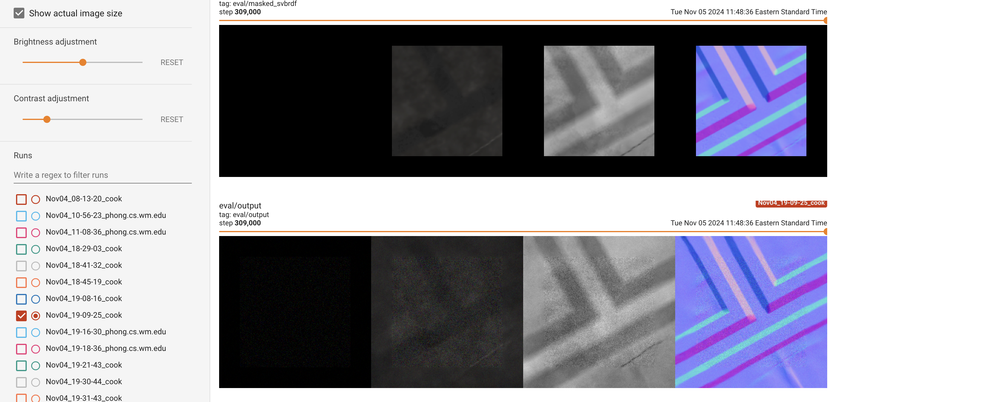

Extending Matfusion Image Diffusion Model
Mentored by W&M Professor Pieter Peers, Department of Computer Science
Current task: Extending Matfusion to be able to produce tileable SVBRDF's.
Code Branch on W&M's Gitlab: rachel_inpainting
Experiment Artifacts:

Mask size: 0%-40%

Mask size: 0%-40%

Mask size: 5%-10%
Training the Matfusion unconditional model to inpaint did not seem to be working, so subsequent model debugging was executed:
Optimizing the learning rate:

False improvement loss function

Loss function after optimizing learning rate

Overfitting on a single image to confirm that the model actually learns properly.
Presentation on neural network concepts: Neural Network Architecture.
Experimenting with image classification models: Machine Learning Models.